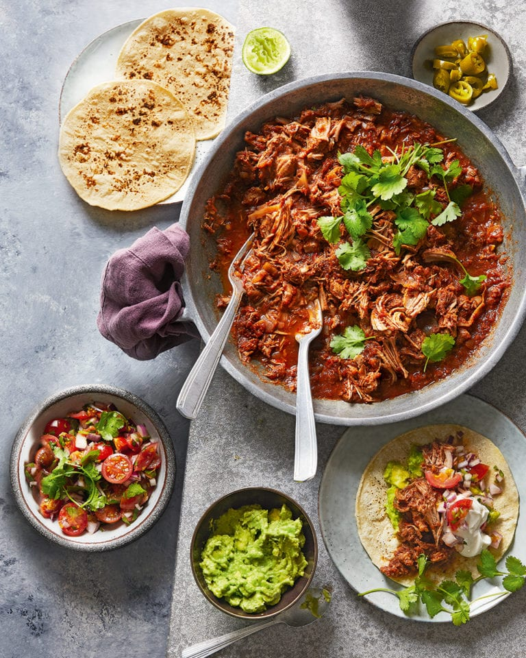

Learn how to make perfectly tender slow cooker pulled pork with our easy recipe. No slow cooker? No problem. The recipe works in a low oven, too. Take your time over more of our slow cook recipe ideas, including slow-cooked chipotle chicken with guacamole.
Ingredients
800g free-range pork shoulder, cut into 3-4cm chunks
2 red onions, chopped
4 peeled garlic cloves, bashed with the side of a cook’s knife
1 tbsp ground cumin
1 tbsp ground coriander
½ tsp chilli powder
½ tsp bell pepper flakes or ground paprika
½ tsp ground allspice
2 tsp dried oregano
4 tbsp tomato purée
4 tbsp red wine vinegar
400g tin chopped tomatoes
A few coriander sprigs and lime wedges to serve
Tabasco or other hot sauce to serve (if you like things spicy)
Method
Add all the ingredients (except the coriander, limes and Tabasco), some salt and pepper and 100ml water to your slow cooker and cook on low for 6 hours, or on high for 4 hours. There’s no need to stir the pork while it’s cooking so you can go out and leave it simmering (see Know-how below for how to cook it in a regular oven).
Once the cooking time is up, check the seasoning then, using 2 forks, shred the meat to ‘pull’ it. Serve sprinkled with the coriander, with lime wedges for squeezing, hot sauce, if you like, and rice, as a jacket potato topper or in a Tex-Mex pasta bake.